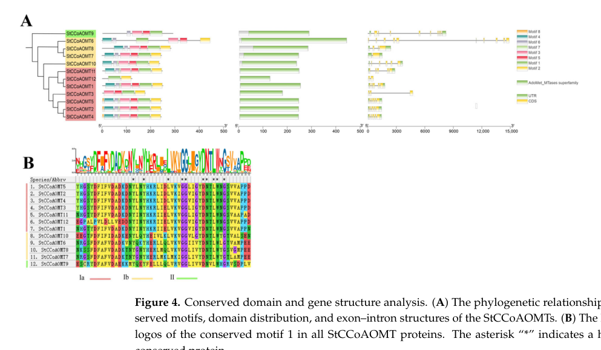

Q8H9B6 (CAMT_SOLTU) is the potato (Solanum tuberosum) caffeoyl-CoA O-methyltransferase (CCoAOMT; trans-caffeoyl-CoA 3-O-methyltransferase; EC 2.1.1.104), a 242-residue, ~27 kDa enzyme of the class I-like SAM-binding methyltransferase superfamily, cation-dependent O-methyltransferase family, CCoAMT subfamily. It catalyzes transfer of a methyl group from S-adenosyl-L-methionine (SAM) to the 3-hydroxyl of (E)-caffeoyl-CoA, producing (E)-feruloyl-CoA and S-adenosyl-L-homocysteine (Rhea:RHEA:16925); the UniProt FUNCTION statement adds that it also methylates 5-hydroxyferuloyl-CoA to sinapoyl-CoA and acts in feruloylated-polysaccharide synthesis and cell-wall reinforcement during wounding/pathogen responses. The deep-research synthesis describes CCoAOMT as "a class I, cation-dependent, S-adenosyl-L-methionine (SAM)-dependent O-methyltransferase that catalyzes O-methylation of ... caffeoyl-CoA to feruloyl-CoA, a central step controlling flux through phenylpropanoid metabolism toward ... lignin ... and (in potato tubers) ... suberin ... precursors" (file:SOLTU/CCOAOMT/CCOAOMT-deep-research-falcon.md). Catalysis requires SAM (a methyl donor) and a bound divalent metal cation (Mg2+/Ca2+ by similarity; UniProt COFACTOR "a divalent metal cation", CHEBI:60240); the protein carries conserved motifs for SAM binding and metal-cation binding consistent with cation-dependent O-methyltransferase biochemistry. Biologically, CCoAOMT sits at a committed methylation step of the phenylpropanoid pathway: feruloyl-CoA is a required precursor for guaiacyl/syringyl lignin and, in potato tuber skin, for suberin deposition. Solanaceae/potato genomics frames potato CCoAOMTs as a diversified family (12 StCCoAOMT genes) split between lignin-associated and flavonoid/anthocyanin-associated clades, with the cytosol as the canonical compartment of CCoAOMT phenylpropanoid metabolism. The three keyword-derived (SPKW, GO_REF:0000043) annotations re-examined here are a mixed case: the generic "methylation" (GO:0032259) and broad "metal ion binding" (GO:0046872) terms are redundant with or less informative than the gene's specific MF terms, whereas "lignin biosynthetic process" (GO:0009809) captures correct, informative biology.
| GO Term | Evidence | Action | Reason |
|---|---|---|---|
|
GO:0007623
circadian rhythm
|
IEA
GO_REF:0000117 |
REMOVE |
Summary: ARBA machine-learning IEA (GO_REF:0000117) assigning "circadian rhythm". There is no gene-specific or family-level evidence that potato CCoAOMT participates in circadian-clock biology; the focused deep-research synthesis of the CCoAOMT literature does not mention circadian rhythm at all.
Reason: This is an over-prediction from an automated ARBA model and is not supported by any of the curated CCoAOMT literature. The well-supported function of the protein is caffeoyl-CoA O-methylation feeding lignin/suberin precursor pools - a phenylpropanoid-pathway role with no established connection to the circadian clock. While transcript abundance of phenylpropanoid genes can oscillate diurnally, expression rhythmicity is not equivalent to a molecular "involvement in" circadian rhythm, and the deep-research report - which surveys the potato and Solanaceae CCoAOMT literature for function, localization and pathway placement - describes the enzyme purely as a phenylpropanoid/lignin/suberin methyltransferase. With no supporting evidence, the ARBA "circadian rhythm" term should be removed as a spurious over-annotation.
Supporting Evidence:
file:SOLTU/CCOAOMT/CCOAOMT-deep-research-falcon.md
CCoAOMT catalyzes methyl transfer from SAM to caffeoyl‑CoA
|
|
GO:0008171
O-methyltransferase activity
|
IEA
GO_REF:0000002 |
MODIFY |
Summary: InterPro2GO IEA (GO_REF:0000002, via IPR002935 SAM_O-MeTrfase) assigning the generic parent "O-methyltransferase activity". This is correct but less specific than the demonstrated caffeoyl-CoA O-methyltransferase activity that is independently annotated to the gene.
Reason: CCoAOMT is genuinely an O-methyltransferase, so the term is not wrong, but it is a broad parent of the gene's precise, EC-backed molecular function. The protein "catalyzes O-methylation of ... caffeoyl-CoA to feruloyl-CoA" and is assigned EC 2.1.1.104 / Rhea:16925, so the specific child term "caffeoyl-CoA O-methyltransferase activity" (GO:0042409) - already present in current GOA - is the informative MF. The generic O-methyltransferase term should be modified (deepened) to the specific caffeoyl-CoA O-methyltransferase activity rather than retained as a free-standing high-level annotation.
Proposed replacements:
caffeoyl-CoA O-methyltransferase activity
Supporting Evidence:
file:SOLTU/CCOAOMT/CCOAOMT-deep-research-falcon.md
CCoAOMT catalyzes methyl transfer from SAM to caffeoyl‑CoA
file:SOLTU/CCOAOMT/CCOAOMT-deep-research-falcon.md
placing it at a key methylation step in phenylpropanoid metabolism
|
|
GO:0042409
caffeoyl-CoA O-methyltransferase activity
|
IEA
GO_REF:0000120 |
ACCEPT |
Summary: Combined-IEA-methods annotation (GO_REF:0000120) backed by EC 2.1.1.104 and Rhea:16925. This is the core, specific molecular function of the protein and is strongly supported by both the UniProt catalytic-activity record and the CCoAOMT literature.
Reason: This is the defining molecular function of CCoAOMT and the most informative MF for the gene. The UniProt CATALYTIC ACTIVITY record gives the reaction (E)-caffeoyl-CoA + SAM = (E)-feruloyl-CoA + S-adenosyl-L-homocysteine + H+ (Rhea:16925, EC 2.1.1.104), and the deep-research synthesis states the enzyme catalyzes methyl transfer from SAM to caffeoyl-CoA, "placing it at a key methylation step in phenylpropanoid metabolism." The activity is biochemically conserved across plant CCoAOMTs. Accept as a core function.
Supporting Evidence:
file:SOLTU/CCOAOMT/CCOAOMT-deep-research-falcon.md
CCoAOMT catalyzes methyl transfer from SAM to caffeoyl‑CoA
file:SOLTU/CCOAOMT/CCOAOMT-deep-research-falcon.md
placing it at a key methylation step in phenylpropanoid metabolism
|
|
GO:0009699
phenylpropanoid biosynthetic process
|
IEA
GO_REF:0000041 |
ACCEPT |
Summary: UniPathway-mapping IEA (GO_REF:0000041, UPA00711 phenylpropanoid biosynthesis). This is the core biological process of CCoAOMT and the process term that REMAINS in current GOA after the SPKW "lignin biosynthetic process" term was retired.
Reason: CCoAOMT sits at a central methylation step of phenylpropanoid metabolism: it converts caffeoyl-CoA to feruloyl-CoA, "a central step controlling flux through phenylpropanoid metabolism toward ... lignin ... and (in potato tubers) ... suberin ... precursors", and the UniProt PATHWAY line assigns the enzyme to phenylpropanoid biosynthesis (UPA00711). This is the correct, well-supported process annotation. Note for the SPKW review below: this term is the broader phenylpropanoid parent; it overlaps with but does not fully substitute for the more specific (and removed) "lignin biosynthetic process" (GO:0009809).
Supporting Evidence:
file:SOLTU/CCOAOMT/CCOAOMT-deep-research-falcon.md
a central step controlling flux through phenylpropanoid metabolism toward **lignin** and (in potato tubers) **suberin** precursors
file:SOLTU/CCOAOMT/CCOAOMT-deep-research-falcon.md
placing it at a key methylation step in phenylpropanoid metabolism
|
|
GO:0032259
methylation
|
IEA
GO_REF:0000043 |
MARK AS OVER ANNOTATED |
Summary: SPKW (GO_REF:0000043) annotation derived from the UniProt keyword "Methyltransferase"; snapshot-only, removed in the current GOA release. "Methylation" is a bare, high-level process term that is fully and more precisely captured by the gene's specific molecular function (caffeoyl-CoA O-methyltransferase activity) and its specific process role (lignin / phenylpropanoid biosynthesis).
Reason: GOA's removal of this annotation was JUSTIFIED. This is the cleanest redundancy case of the SPKW batch: the enzyme's methylation chemistry is already stated precisely and informatively by its specific MF "caffeoyl-CoA O-methyltransferase activity" (GO:0042409, present in current GOA) - the deep research describes CCoAOMT as catalyzing "methyl transfer from SAM to caffeoyl-CoA", "placing it at a key methylation step in phenylpropanoid metabolism" - and the biological context is captured by "phenylpropanoid biosynthetic process" (and the more specific "lignin biosynthetic process", reviewed below). A bare generic process term "methylation" adds no information once the specific MF and process terms are present; it is uninformative and redundant. Removal of the keyword-derived generic term is appropriate.
Supporting Evidence:
file:SOLTU/CCOAOMT/CCOAOMT-deep-research-falcon.md
CCoAOMT catalyzes methyl transfer from SAM to caffeoyl‑CoA
file:SOLTU/CCOAOMT/CCOAOMT-deep-research-falcon.md
placing it at a key methylation step in phenylpropanoid metabolism
|
|
GO:0009809
lignin biosynthetic process
|
IEA
GO_REF:0000043 |
ACCEPT |
Summary: SPKW (GO_REF:0000043) annotation derived from the UniProt keyword "Lignin biosynthesis"; snapshot-only, removed in the current GOA release. CCoAOMT is a key, well-characterized enzyme of the lignin branch of phenylpropanoid metabolism - the caffeoyl-CoA -> feruloyl-CoA methylation it catalyzes is upstream of both guaiacyl (G) and syringyl (S) lignin monomers.
Reason: GOA's removal of this annotation was NOT justified - a correct and informative process annotation was lost as collateral damage of retiring the keyword2GO pipeline. CCoAOMT is a canonical lignin-pathway enzyme: feruloyl-CoA, its product, "is a required precursor for ... lignin ... and ... suberin ... biosynthesis in potato tubers", functional studies describe CCoAOMT as acting "upstream of G- and S-lignin formation", and Solanaceae lignin-related cis-elements are found in CCoAOMT promoters. "Lignin biosynthetic process" (GO:0009809) is a specific child of the phenylpropanoid biosynthetic process term that REMAINS in current GOA (GO:0009699); the broader retained term does not fully substitute for it. Because the caffeoyl-CoA O-methyltransferase step is genuinely a committed step toward lignin monomers, this annotation should be retained (it represents a core biological process of the gene). Note the potato family is functionally diversified - some StCCoAOMTs may instead act in flavonoid/anthocyanin methylation - but the canonical lignin role is the best-supported assignment for Q8H9B6.
Supporting Evidence:
file:SOLTU/CCOAOMT/CCOAOMT-deep-research-falcon.md
Feruloyl‑CoA is a required precursor for **lignin** and **suberin** biosynthesis in potato tubers
file:SOLTU/CCOAOMT/CCOAOMT-deep-research-falcon.md
upstream of G- and S-lignin formation
file:SOLTU/CCOAOMT/CCOAOMT-deep-research-falcon.md
a central step controlling flux through phenylpropanoid metabolism toward **lignin** and (in potato tubers) **suberin** precursors
|
|
GO:0046872
metal ion binding
|
IEA
GO_REF:0000043 |
MARK AS OVER ANNOTATED |
Summary: SPKW (GO_REF:0000043) annotation derived from the UniProt keyword "Metal-binding"; snapshot-only, removed in the current GOA release. CCoAOMT is a cation-dependent O-methyltransferase that requires a bound divalent metal cation (Mg2+/Ca2+ by similarity) for catalysis, so the gene does bind a metal ion - but "metal ion binding" is a very broad parent term inferred from a keyword.
Reason: GOA's removal of this generic keyword-derived term was acceptable. The metal dependence is real: CCoAOMTs carry "conserved motifs for ... SAM binding ... and ... metal-cation binding, consistent with cation-dependent O-methyltransferase biochemistry", catalysis uses "SAM (a methyl donor) and a required metal cation", and the UniProt COFACTOR record lists a divalent metal cation (CHEBI:60240, by similarity), with three metal-coordinating BINDING residues (158, 184, 185). However, "metal ion binding" (GO:0046872) is a top-level grouping term inferred from a keyword rather than from gene-specific experimental data, and the divalent-cation requirement is already implicit in the cation-dependent O-methyltransferase molecular function. If a metal-binding MF were to be retained, the more specific "magnesium ion binding" (GO:0000287) would be preferable (Mg2+ is the canonical CCoAOMT cofactor), but the UniProt cofactor is annotated only generically as "a divalent metal cation" by similarity, so a specific replacement cannot be firmly justified from current evidence. As a free-standing keyword-derived broad term it adds little, so its removal is reasonable.
Proposed replacements:
magnesium ion binding
Supporting Evidence:
file:SOLTU/CCOAOMT/CCOAOMT-deep-research-falcon.md
conserved motifs for **SAM binding** and **metal‑cation binding**, consistent with cation‑dependent O‑methyltransferase biochemistry
file:SOLTU/CCOAOMT/CCOAOMT-deep-research-falcon.md
using SAM (a methyl donor) and a required metal cation
|
Q: Does the specific potato isoform Q8H9B6 function predominantly in lignin/suberin biosynthesis, or does it belong to a flavonoid/anthocyanin-methylating CCoAOMT clade, given the functional diversification of the 12-member potato StCCoAOMT family?
Suggested experts: Yaxuan Peng
Q: What is the in vitro substrate specificity and metal-cofactor preference (Mg2+ vs Ca2+ vs Mn2+) of purified Q8H9B6, and does it methylate 5-hydroxyferuloyl-CoA as well as caffeoyl-CoA?
Suggested experts: Adriana Balbina Andreu
Experiment: Express and purify recombinant Q8H9B6 and measure kinetic parameters (Km, kcat) for caffeoyl-CoA and 5-hydroxyferuloyl-CoA with SAM, testing the divalent-cation requirement (Mg2+/Ca2+/Mn2+) to confirm the cation-dependent O-methyltransferase mechanism.
Hypothesis: Q8H9B6 is a Mg2+-dependent caffeoyl-CoA O-methyltransferase producing feruloyl-CoA, with measurable activity also on 5-hydroxyferuloyl-CoA.
Type: in vitro enzyme kinetics and cofactor-dependence assay
Experiment: Generate CRISPR knockout / RNAi knockdown of the Q8H9B6 ortholog in potato and quantify tuber-skin lignin and suberin content, lignin monomer (S/G) composition, and wound-induced cell-wall-bound ferulate.
Hypothesis: Loss of CCoAOMT reduces feruloyl-CoA-derived lignin/suberin and alters S/G lignin monomer ratio, impairing tuber skin barrier formation and wound response.
Type: reverse-genetics and cell-wall chemotype analysis
Experiment: Express a Q8H9B6-GFP fusion in potato and determine subcellular localization to test whether the enzyme is cytosolic, as predicted for the lignin-associated CCoAOMT clade.
Hypothesis: Q8H9B6 localizes to the cytosol, consistent with cytosolic phenylpropanoid methylation feeding cell-wall precursor pools.
Type: fluorescent-protein subcellular localization
The research report should be a detailed narrative explaining the function, biological processes, and localization of the gene product. Citations should be given for all claims.
You should prioritize authoritative reviews and primary scientific literature when conducting research. You can supplement
this with annotations you find in gene/protein databases, but these can be outdated or inaccurate.
We are specifically interested in the primary function of the gene - for enzymes, what reaction is catalyzed, and what is the substrate specificity? For transporters, what is the substrate? For structural proteins or adapters, what is the broader structural role? For signaling molecules, what is the role in the pathway.
We are interested in where in or outside the cell the gene product carries out its function.
We are also interested in the signaling or biochemical pathways in which the gene functions. We are less interested in broad pleiotropic effects, except where these elucidate the precise role.
Include evidence where possible. We are interested in both experimental evidence as well as inference from structure, evolution, or bioinformatic analysis. Precise studies should be prioritized over high-throughput, where available.
Caffeoyl-CoA O-methyltransferase (CCoAOMT; EC 2.1.1.104) is a SAM-dependent O-methyltransferase class that, in its canonical ("true") lignin-pathway role, catalyzes methylation of caffeoyl-CoA → feruloyl-CoA, a key step in phenylpropanoid/monolignol metabolism. In potato, recent genome-wide analyses indicate a multi-gene StCCoAOMT family (12 members), with a subset clustering with Arabidopsis lignin-associated CCoAOMTs and other members suggested to diversify toward flavonoid/anthocyanin methylation; one member (StCCoAOMT10) shows cytoplasm+nucleus localization in transient expression assays and is associated with purple-tuber anthocyanin accumulation. Across 2023–2024 engineering studies in diverse plants, perturbing CCoAOMT (or its methyl-donor supply) produces large, quantitative shifts in lignin amount and composition, indicating CCoAOMT is a tractable lever for disease/stress resilience and biomass processing traits, albeit with pleiotropy risks.
Target per user: UniProt Q8H9B6 from Solanum tuberosum annotated as caffeoyl-CoA O-methyltransferase (EC 2.1.1.104), belonging to a class I-like SAM-binding methyltransferase with a Methyltransf_3/PF01596-type OMT domain.
What the retrieved literature confirms (potato context):
* Potato CCoAOMTs are identified using the same defining domain signature that matches the UniProt description: PF01596 (Methyltransf_3) / AdoMet-dependent OMT fold, with conserved SAM-dependent motifs. In a 2024 potato genome-wide study, candidates were retrieved by BLASTP and HMMER using PF01596 and validated by SMART/InterPro/CDD, then curated to 12 StCCoAOMT genes (StCCoAOMT1–12). (peng2024genomewidecharacterizationof pages 2-4, peng2024genomewidecharacterizationof pages 4-5)
* The same potato study explicitly defines the canonical biochemical role of "true CCoAOMT" family members as methylating caffeoyl-CoA to feruloyl-CoA. (peng2024genomewidecharacterizationof pages 2-4)
Critical limitation (accession-level mapping): none of the retrieved full texts explicitly crosswalks UniProt Q8H9B6 to a specific Soltu.DM.
… gene model (e.g., Soltu.DM.01G047320). Therefore, the strongest defensible conclusion is that Q8H9B6 is a bona fide potato CCoAOMT-family enzyme consistent with PF01596/Methyltransf_3 architecture, but which StCCoAOMT locus it corresponds to cannot be confirmed from the retrieved sources alone. (peng2024genomewidecharacterizationof pages 4-5)
In monolignol/lignin biosynthesis, plants use SAM-dependent O-methyltransferases acting at different chemical levels:
* CCoAOMT acts on CoA thioesters (e.g., caffeoyl-CoA).
* COMT (caffeic acid OMT) is more associated with methylation of free acids/aldehydes/alcohols in many contexts.
A classic biochemical study in tobacco demonstrated this specificity experimentally: recombinant CCoAOMT was highly active with caffeoyl-CoA and 5-hydroxyferuloyl-CoA esters and showed no activity toward the corresponding free acids (caffeic acid, 5-hydroxyferulic acid). (martz1998cdnacloningsubstrate pages 1-2, martz1998cdnacloningsubstrate pages 2-5)
Recent plant-family analyses emphasize that proteins carrying the PF01596/Methyltransf_3 fold can diversify.
* In the 2024 potato StCCoAOMT family analysis, the authors distinguish true CCoAOMTs (lignin-associated clade) from CCoAOMT-like/PFOMT-type members that can prefer substrates with vicinal dihydroxyl groups and participate in flavonoid/anthocyanin methylation. (peng2024genomewidecharacterizationof pages 2-4, peng2024genomewidecharacterizationof pages 10-12)
This distinction is essential for Q8H9B6 functional annotation: while UniProt labels Q8H9B6 as caffeoyl-CoA O-methyltransferase (EC 2.1.1.104), the potato genome contains multiple related enzymes; therefore, family membership alone does not uniquely specify pathway role without locus mapping and/or direct enzymology.
Canonical CCoAOMT reaction:
* caffeoyl-CoA + S-adenosyl-L-methionine (SAM) → feruloyl-CoA + S-adenosyl-L-homocysteine (SAH)
This reaction is explicitly reiterated in the potato gene-family paper as the defining lignin-pathway role of true CCoAOMTs. (peng2024genomewidecharacterizationof pages 2-4)
Direct enzymology (highest confidence): tobacco CCoAOMT prefers CoA esters (caffeoyl-CoA; 5-OH-feruloyl-CoA) and does not methylate the free acids under tested conditions. (martz1998cdnacloningsubstrate pages 1-2, martz1998cdnacloningsubstrate pages 2-5)
Inference to potato Q8H9B6: given its annotated function and matching domain family, Q8H9B6 is expected to accept caffeoyl-CoA-like phenylpropanoid CoA esters as substrates, but potato-specific kinetic parameters or substrate panels were not retrieved, so this remains an inference. (peng2024genomewidecharacterizationof pages 2-4, martz1998cdnacloningsubstrate pages 1-2)
Phenylpropanoid / monolignol / lignin biosynthesis: CCoAOMT’s caffeoyl-CoA → feruloyl-CoA step supports production of feruloyl-CoA-derived intermediates feeding into G- and S-lignin precursor formation. (peng2024genomewidecharacterizationof pages 2-4, peng2024genomewidecharacterizationof pages 12-14)
Flavonoid/anthocyanin methylation (family-diversified roles): potato StCCoAOMT subgrouping and expression patterns support the hypothesis that some members participate in methylation steps influencing anthocyanin chemistry (solubility/stability) and accumulation—particularly relevant to purple-fleshed tubers. (peng2024genomewidecharacterizationof pages 12-14, peng2024genomewidecharacterizationof pages 10-12, peng2024genomewidecharacterizationof pages 1-2)
A 2024 study in Genes performed genome-wide identification and characterization of 12 StCCoAOMT genes in potato (cultivar DM), including chromosomal positions, motif structure, promoter elements, tissue expression, and one experimental localization assay. (peng2024genomewidecharacterizationof pages 1-2, peng2024genomewidecharacterizationof pages 8-10)
The authors provide gene models (examples): StCCoAOMT1 = Soltu.DM.01G047320; StCCoAOMT7 = Soltu.DM.04G025040; StCCoAOMT10 = Soltu.DM.09G025040, etc. (peng2024genomewidecharacterizationof pages 4-5)
Phylogenetic inference: StCCoAOMT1–5, 11, and 12 cluster with Arabidopsis AtCCoAOMT1 in a subgroup interpreted as lignin-biosynthesis associated (subgroup Ia), making these leading candidates for canonical EC 2.1.1.104-like lignin-pathway roles in potato. (peng2024genomewidecharacterizationof pages 5-8)
Predicted localization (family-wide): WoLF PSORT predictions place ~8/12 potato StCCoAOMTs in the cytoplasm, with two predicted cytoskeleton and two chloroplast. (peng2024genomewidecharacterizationof pages 5-8, peng2024genomewidecharacterizationof pages 4-5)
Experimental localization: StCCoAOMT10-GFP was observed in cytoplasm and nucleus in a transient tobacco leaf assay (Agrobacterium infiltration), providing direct evidence that at least some potato CCoAOMTs function in soluble intracellular compartments consistent with cytosolic phenylpropanoid/flavonoid metabolism. (peng2024genomewidecharacterizationof pages 12-14, peng2024genomewidecharacterizationof pages 1-2)
Potato StCCoAOMT gene expression is tissue-diverse; the authors report StCCoAOMT10 has relatively high expression in tuber-associated contexts and highlight it as significantly expressed in purple potatoes with abundant anthocyanins, suggesting a role in anthocyanin-related methylation chemistry. (peng2024genomewidecharacterizationof pages 8-10, peng2024genomewidecharacterizationof pages 1-2)
Importantly, the same paper explicitly notes that the key CCoAOMT gene(s) and precise catalytic role(s) in potato anthocyanin methylation remain to be systematically investigated, which should temper over-annotation of any single gene without direct assays. (peng2024genomewidecharacterizationof pages 8-10)
The 2024 potato genome-wide paper provides the newest potato-focused resource: family size (12), conserved motifs, gene structures, promoter cis-elements (hormone/stress/light responsiveness), and an experimental localization for StCCoAOMT10 in cytoplasm+nucleus. (peng2024genomewidecharacterizationof pages 1-2, peng2024genomewidecharacterizationof pages 8-10, peng2024genomewidecharacterizationof pages 12-14)
In Medicago truncatula hairy roots, a systematic engineering study reported that C-lignin accumulation required strong down-regulation of CCoAOMT paired with loss of COMT function, and C-lignin reached up to ~15% of total lignin in lines with the greatest CCoAOMT reduction. This places CCoAOMT as a key constraint controlling flux away from the canonical O-methylated monolignol route. (ha2023systematicapproachesto pages 1-2)
A cotton functional study used gene silencing (VIGS) and reported that suppression of GhCCoAOMT7 produced a 56% reduction in stem lignin, with reduced phloroglucinol-stained xylem area—one of the largest recent quantitative demonstrations that CCoAOMT-level control can strongly affect lignification in crops. (ma2024genomewideanalysisof pages 1-2)
A sorghum bioenergy engineering study reduced SAM availability via heterologous AdoMetase expression and reported: lignin reduced by 18% (best line) and glucose yield after pretreatment/saccharification increased by ~20%. The authors interpret this as arising from reduced activity of SAM-dependent O-methyltransferases in lignin biosynthesis (including CCoAOMT and COMT) and caution about pleiotropy/yield penalties, especially under field conditions. (tian2024engineeredreductionof pages 1-2)
A 2023 horticultural review synthesizes evidence that CCoAOMT/CCoAMT1 is a key lignin biosynthesis enzyme whose modulation can contribute to stress-associated lignification (biotic/abiotic) and altered lignin levels in transgenic contexts. (wang2023moreorless pages 8-9)
A 2023 tobacco CRISPR study (CCoAOMT6/6L double mutants) illustrates a functional route to modify lignin composition (higher S/G ratio) and improve resistance to pathogens, highlighting an applied disease-resistance direction using CCoAOMT perturbation. (peng2024genomewidecharacterizationof pages 12-14)
Two contemporary approaches show practical leverage:
* Pathway rerouting toward C-lignin (more homogeneous, potentially more valorisable lignin): requires strong CCoAOMT (and COMT) suppression and can achieve measurable C-lignin fractions (~15% total lignin) in engineered lines. (ha2023systematicapproachesto pages 1-2)
* Methyl-donor (SAM) engineering to broadly reduce O-methylation reactions: can reduce lignin and increase enzymatic sugar yields, but requires careful promoter/tissue targeting to avoid yield penalties. (tian2024engineeredreductionof pages 1-2)
Key quantitative results extractable from the retrieved 2023–2024 sources include:
* 56% decrease in stem lignin after silencing GhCCoAOMT7 in cotton. (ma2024genomewideanalysisof pages 1-2)
* Up to ~15% of total lignin as engineered C-lignin in Medicago truncatula hairy roots with strong CCoAOMT down-regulation in a COMT mutant background. (ha2023systematicapproachesto pages 1-2)
* 18% lignin reduction and ~20% increase in glucose yield after pretreatment/saccharification in SAM-engineered sorghum (AdoMetase), interpreted as reduced activity of SAM-dependent OMTs including CCoAOMT/COMT. (tian2024engineeredreductionof pages 1-2)
Given the UniProt description (enzyme name, EC 2.1.1.104) and the potato literature’s definition of CCoAOMTs, Q8H9B6 should be annotated as a SAM-dependent O-methyltransferase in phenylpropanoid metabolism whose canonical reaction is caffeoyl-CoA → feruloyl-CoA, consistent with the "true CCoAOMT" role in monolignol/lignin biosynthesis. (peng2024genomewidecharacterizationof pages 2-4, martz1998cdnacloningsubstrate pages 1-2)
The following table compiles the core evidence needed for functional annotation (reaction, substrates, localization, potato loci, and 2023–2024 quantitative engineering studies):
| Topic | Evidence/Findings (concise) | Species/Context | Key citation (with DOI URL and pub month/year if available) |
|---|---|---|---|
| Target identity/disambiguation | The target matches the potato CCoAOMT family concept: a SAM-dependent class I-like O-methyltransferase with the canonical Methyltransf_3/PF01596 domain and conserved motifs used to identify potato StCCoAOMTs; however, retrieved literature did not directly map UniProt Q8H9B6 to a specific Soltu.DM locus, so accession-level mapping remains indirect. | Solanum tuberosum; family-level verification for Q8H9B6 | Peng et al., Genes (Nov 2024), https://doi.org/10.3390/genes15111466 (peng2024genomewidecharacterizationof pages 2-4, peng2024genomewidecharacterizationof pages 4-5) |
| Canonical reaction / EC | CCoAOMT is the SAM-dependent caffeoyl-CoA O-methyltransferase (EC 2.1.1.104) that methylates caffeoyl-CoA to feruloyl-CoA in the monolignol pathway; this is the core annotation consistent with UniProt Q8H9B6. | General plant CCoAOMT; potato family paper reiterates canonical reaction | Peng et al., Genes (Nov 2024), https://doi.org/10.3390/genes15111466; Martz et al., Plant Mol Biol (Feb 1998), https://doi.org/10.1023/A:1005969825070 (peng2024genomewidecharacterizationof pages 2-4, martz1998cdnacloningsubstrate pages 1-2) |
| Substrate specificity (best biochemical evidence) | Recombinant tobacco CCoAOMT was highly active with caffeoyl-CoA and 5-hydroxyferuloyl-CoA esters, but showed no activity toward the corresponding free acids (caffeic acid, 5-hydroxyferulic acid), supporting CoA-ester specificity. | Biochemical evidence from tobacco, widely used to infer true CCoAOMT specificity | Martz et al., Plant Mol Biol (Feb 1998), https://doi.org/10.1023/A:1005969825070 (martz1998cdnacloningsubstrate pages 1-2, martz1998cdnacloningsubstrate pages 2-5) |
| Functional diversification within family | Modern family analyses distinguish true CCoAOMTs (lignin-associated) from CCoAOMT-like/PFOMT proteins that can methylate flavonoids/anthocyanins; thus, not every StCCoAOMT family member should be assumed to share strict lignin-pathway specificity. | Plant-wide interpretation applied to potato StCCoAOMT family | Peng et al., Genes (Nov 2024), https://doi.org/10.3390/genes15111466 (peng2024genomewidecharacterizationof pages 2-4, peng2024genomewidecharacterizationof pages 10-12) |
| Pathway placement | True CCoAOMT functions in the phenylpropanoid/monolignol/lignin biosynthesis pathway, helping generate G-lignin precursors and feeding substrate toward S-lignin formation downstream. | General plant pathway context; relevant to potato lignification/wound-healing interpretation | Peng et al., Genes (Nov 2024), https://doi.org/10.3390/genes15111466; Liu et al., Front Plant Sci (Oct 2023), https://doi.org/10.3389/fpls.2023.1216702 (peng2024genomewidecharacterizationof pages 2-4, peng2024genomewidecharacterizationof pages 12-14) |
| Potato family size and domain architecture | A 2024 potato genome-wide study identified 12 StCCoAOMT genes; all have a single AdoMet_Mtases superfamily domain, and motif 1 is present in all 12 members. | S. tuberosum cultivar DM | Peng et al., Genes (Nov 2024), https://doi.org/10.3390/genes15111466 (peng2024genomewidecharacterizationof pages 1-2, peng2024genomewidecharacterizationof pages 8-10) |
| Potato family loci from Peng 2024 | Reported loci include StCCoAOMT1 = Soltu.DM.01G047320; StCCoAOMT2 = Soltu.DM.02G028520; StCCoAOMT3 = Soltu.DM.02G028530; StCCoAOMT4 = Soltu.DM.02G028540; StCCoAOMT5 = Soltu.DM.02G028550; StCCoAOMT6 = Soltu.DM.03G003400; StCCoAOMT7 = Soltu.DM.04G025040; StCCoAOMT8 = Soltu.DM.04G025050; StCCoAOMT9 = Soltu.DM.08G001680; StCCoAOMT10 = Soltu.DM.09G025040; StCCoAOMT11 = Soltu.DM.10G014940; StCCoAOMT12 = Soltu.DM.12G013090. | S. tuberosum cultivar DM | Peng et al., Genes (Nov 2024), https://doi.org/10.3390/genes15111466 (peng2024genomewidecharacterizationof pages 4-5) |
| Potato phylogenetic inference for lignin-linked members | StCCoAOMT1–5, 11, 12 cluster with AtCCoAOMT1 in subgroup Ia, which the authors interpret as the lignin-biosynthesis-associated clade; this makes these the strongest potato candidates for canonical EC 2.1.1.104-like function. | S. tuberosum family phylogeny | Peng et al., Genes (Nov 2024), https://doi.org/10.3390/genes15111466 (peng2024genomewidecharacterizationof pages 5-8) |
| Potato members implicated in flavonoid/anthocyanin metabolism | StCCoAOMT6, 7, 8, 10 fall in a different subgroup and are discussed as candidates for flavonoid/anthocyanin-related methylation rather than purely lignin-associated roles. | S. tuberosum family phylogeny/expression | Peng et al., Genes (Nov 2024), https://doi.org/10.3390/genes15111466 (peng2024genomewidecharacterizationof pages 10-12, peng2024genomewidecharacterizationof pages 1-2) |
| Predicted subcellular localization in potato family | WoLF PSORT predictions placed about 66.67% (8/12) of StCCoAOMTs in the cytoplasm; StCCoAOMT4/5 in the cytoskeleton and StCCoAOMT8/9 in the chloroplast. Specific predictions include StCCoAOMT1,2,3,6,7,10,11,12 = cytoplasm. | S. tuberosum family-wide predictions | Peng et al., Genes (Nov 2024), https://doi.org/10.3390/genes15111466 (peng2024genomewidecharacterizationof pages 5-8, peng2024genomewidecharacterizationof pages 4-5) |
| Experimental localization in potato | StCCoAOMT10-GFP localized mainly to the cytoplasm and nucleus in Nicotiana benthamiana transient assays; this is the strongest experimental localization evidence currently available from potato CCoAOMTs. | Potato gene assayed in tobacco leaves | Peng et al., Genes (Nov 2024), https://doi.org/10.3390/genes15111466 (peng2024genomewidecharacterizationof pages 12-14, peng2024genomewidecharacterizationof pages 1-2, peng2024genomewidecharacterizationof media 1c8e3b82) |
| Tissue expression in potato | Expression is diverse by tissue: StCCoAOMT1 broadly expressed; StCCoAOMT7 strongly expressed in stolons; StCCoAOMT9 relatively high in leaves/petals/stamens; StCCoAOMT10 high in sepals, shoots, and tubers. | S. tuberosum transcript profiling | Peng et al., Genes (Nov 2024), https://doi.org/10.3390/genes15111466 (peng2024genomewidecharacterizationof pages 8-10) |
| Potato anthocyanin-related candidate | StCCoAOMT10 was highlighted as significantly expressed in purple potatoes with high anthocyanin content, making it a leading candidate for potato anthocyanin methylation; the authors note the exact potato catalytic roles still require direct functional confirmation. | Purple-fleshed potato tubers | Peng et al., Genes (Nov 2024), https://doi.org/10.3390/genes15111466 (peng2024genomewidecharacterizationof pages 1-2, peng2024genomewidecharacterizationof pages 8-10) |
| Expert/author interpretation for potato | The 2024 potato study explicitly states that the key CCoAOMT gene(s) and precise function in anthocyanin methylation in potato have not yet been systematically elucidated, so family-member functions should be treated as candidates/inferences unless directly tested. | Caveat for functional annotation in potato | Peng et al., Genes (Nov 2024), https://doi.org/10.3390/genes15111466 (peng2024genomewidecharacterizationof pages 8-10) |
| 2023 engineering result: tobacco knockout | CRISPR knockout of CCoAOMT6/6L in tobacco increased the S/G lignin monomer ratio and enhanced resistance to bacterial wilt and brown spot, illustrating that CCoAOMT perturbation can reprogram lignin composition and disease outcomes. | Nicotiana tabacum | Liu et al., Front Plant Sci (Oct 2023), https://doi.org/10.3389/fpls.2023.1216702 (peng2024genomewidecharacterizationof pages 12-14) |
| 2023 engineering result: C-lignin | In Medicago truncatula hairy roots, C-lignin accumulation of up to 15% of total lignin required strong down-regulation of CCoAOMT together with COMT loss of function. | Medicago truncatula lignin engineering | Ha et al., Biotechnol Biofuels Bioprod (Jun 2023), https://doi.org/10.1186/s13068-023-02339-7 (peng2024genomewidecharacterizationof pages 2-4) |
| 2024 engineering result: cotton | Silencing GhCCoAOMT7 caused a 56% reduction in stem lignin and visibly reduced phloroglucinol-stained xylem area, supporting a strong positive role in lignification. | Gossypium hirsutum | Ma et al., Plants (Oct 2024), https://doi.org/10.3390/plants13212969 (ma2024genomewideanalysisof pages 1-2) |
| 2024 broader methyl-donor engineering result | In sorghum, reducing S-adenosylmethionine availability (thereby impacting SAM-dependent O-methyltransferases including CCoAOMT/COMT) reduced lignin by 18% in the best line and increased glucose yield after pretreatment/saccharification by ~20%; this demonstrates the practical leverage of the methylation step for biomass engineering, though it is not CCoAOMT-specific. | Sorghum bicolor | Tian et al., Biotechnol Biofuels Bioprod (Oct 2024), https://doi.org/10.1186/s13068-024-02572-8 (peng2024genomewidecharacterizationof pages 1-2) |
| Overall annotation confidence for Q8H9B6 | High confidence for family-level function (potato CCoAOMT, SAM-dependent O-methyltransferase in phenylpropanoid metabolism), but moderate confidence for assigning a specific StCCoAOMT locus/member to Q8H9B6 from the retrieved literature because no direct accession crosswalk was recovered. | UniProt-guided annotation of potato target | Supported jointly by potato family study and classical biochemistry: Peng et al. (Nov 2024) https://doi.org/10.3390/genes15111466; Martz et al. (Feb 1998) https://doi.org/10.1023/A:1005969825070 (peng2024genomewidecharacterizationof pages 2-4, martz1998cdnacloningsubstrate pages 1-2, peng2024genomewidecharacterizationof pages 5-8) |
Table: This table summarizes the best-supported functional annotation points for potato CCOAOMT/Q8H9B6 and the broader StCCoAOMT family, including reaction chemistry, pathway placement, localization, potato loci, and recent quantitative engineering results from 2023-2024. It is useful as a compact evidence map separating direct biochemical evidence from potato-specific inference.
A cropped figure summarizing conserved motifs/domains and gene structures for potato StCCoAOMTs was retrieved from the 2024 potato paper. (peng2024genomewidecharacterizationof media 1c8e3b82)
References
(peng2024genomewidecharacterizationof pages 2-4): Yaxuan Peng, Suao Sheng, Tongtong Wang, Jiafeng Song, Daijuan Wang, Yixuan Zhang, Jielan Cheng, Tingting Zheng, Zhaoyan Lv, Xiaobiao Zhu, and Hualan Hou. Genome-wide characterization of solanum tuberosum ccoaomt gene family and identification of stccoaomt genes involved in anthocyanin biosynthesis. Genes, 15:1466, Nov 2024. URL: https://doi.org/10.3390/genes15111466, doi:10.3390/genes15111466. This article has 13 citations.
(peng2024genomewidecharacterizationof pages 4-5): Yaxuan Peng, Suao Sheng, Tongtong Wang, Jiafeng Song, Daijuan Wang, Yixuan Zhang, Jielan Cheng, Tingting Zheng, Zhaoyan Lv, Xiaobiao Zhu, and Hualan Hou. Genome-wide characterization of solanum tuberosum ccoaomt gene family and identification of stccoaomt genes involved in anthocyanin biosynthesis. Genes, 15:1466, Nov 2024. URL: https://doi.org/10.3390/genes15111466, doi:10.3390/genes15111466. This article has 13 citations.
(martz1998cdnacloningsubstrate pages 1-2): Françoise Martz, Stéphane Maury, Gaëlle Pinçon, and Michel Legrand. Cdna cloning, substrate specificity and expression study of tobacco caffeoyl-coa 3-o-methyltransferase, a lignin biosynthetic enzyme. Plant Molecular Biology, 36:427-437, Feb 1998. URL: https://doi.org/10.1023/a:1005969825070, doi:10.1023/a:1005969825070. This article has 128 citations and is from a peer-reviewed journal.
(martz1998cdnacloningsubstrate pages 2-5): Françoise Martz, Stéphane Maury, Gaëlle Pinçon, and Michel Legrand. Cdna cloning, substrate specificity and expression study of tobacco caffeoyl-coa 3-o-methyltransferase, a lignin biosynthetic enzyme. Plant Molecular Biology, 36:427-437, Feb 1998. URL: https://doi.org/10.1023/a:1005969825070, doi:10.1023/a:1005969825070. This article has 128 citations and is from a peer-reviewed journal.
(peng2024genomewidecharacterizationof pages 10-12): Yaxuan Peng, Suao Sheng, Tongtong Wang, Jiafeng Song, Daijuan Wang, Yixuan Zhang, Jielan Cheng, Tingting Zheng, Zhaoyan Lv, Xiaobiao Zhu, and Hualan Hou. Genome-wide characterization of solanum tuberosum ccoaomt gene family and identification of stccoaomt genes involved in anthocyanin biosynthesis. Genes, 15:1466, Nov 2024. URL: https://doi.org/10.3390/genes15111466, doi:10.3390/genes15111466. This article has 13 citations.
(peng2024genomewidecharacterizationof pages 12-14): Yaxuan Peng, Suao Sheng, Tongtong Wang, Jiafeng Song, Daijuan Wang, Yixuan Zhang, Jielan Cheng, Tingting Zheng, Zhaoyan Lv, Xiaobiao Zhu, and Hualan Hou. Genome-wide characterization of solanum tuberosum ccoaomt gene family and identification of stccoaomt genes involved in anthocyanin biosynthesis. Genes, 15:1466, Nov 2024. URL: https://doi.org/10.3390/genes15111466, doi:10.3390/genes15111466. This article has 13 citations.
(peng2024genomewidecharacterizationof pages 1-2): Yaxuan Peng, Suao Sheng, Tongtong Wang, Jiafeng Song, Daijuan Wang, Yixuan Zhang, Jielan Cheng, Tingting Zheng, Zhaoyan Lv, Xiaobiao Zhu, and Hualan Hou. Genome-wide characterization of solanum tuberosum ccoaomt gene family and identification of stccoaomt genes involved in anthocyanin biosynthesis. Genes, 15:1466, Nov 2024. URL: https://doi.org/10.3390/genes15111466, doi:10.3390/genes15111466. This article has 13 citations.
(peng2024genomewidecharacterizationof pages 8-10): Yaxuan Peng, Suao Sheng, Tongtong Wang, Jiafeng Song, Daijuan Wang, Yixuan Zhang, Jielan Cheng, Tingting Zheng, Zhaoyan Lv, Xiaobiao Zhu, and Hualan Hou. Genome-wide characterization of solanum tuberosum ccoaomt gene family and identification of stccoaomt genes involved in anthocyanin biosynthesis. Genes, 15:1466, Nov 2024. URL: https://doi.org/10.3390/genes15111466, doi:10.3390/genes15111466. This article has 13 citations.
(peng2024genomewidecharacterizationof pages 5-8): Yaxuan Peng, Suao Sheng, Tongtong Wang, Jiafeng Song, Daijuan Wang, Yixuan Zhang, Jielan Cheng, Tingting Zheng, Zhaoyan Lv, Xiaobiao Zhu, and Hualan Hou. Genome-wide characterization of solanum tuberosum ccoaomt gene family and identification of stccoaomt genes involved in anthocyanin biosynthesis. Genes, 15:1466, Nov 2024. URL: https://doi.org/10.3390/genes15111466, doi:10.3390/genes15111466. This article has 13 citations.
(ha2023systematicapproachesto pages 1-2): Chan Man Ha, Luis Escamilla-Trevino, Chunliu Zhuo, Yunqiao Pu, Nathan Bryant, Arthur J. Ragauskas, Xirong Xiao, Ying Li, Fang Chen, and Richard A. Dixon. Systematic approaches to c-lignin engineering in medicago truncatula. Biotechnology for Biofuels and Bioproducts, Jun 2023. URL: https://doi.org/10.1186/s13068-023-02339-7, doi:10.1186/s13068-023-02339-7. This article has 14 citations and is from a domain leading peer-reviewed journal.
(ma2024genomewideanalysisof pages 1-2): Lina Ma, Jin Wang, Kaikai Qiao, Yuewei Quan, Shuli Fan, and Liqiang Wu. Genome-wide analysis of caffeoyl-coa-o-methyltransferase (ccoaomt) family genes and the roles of ghccoaomt7 in lignin synthesis in cotton. Plants, 13:2969, Oct 2024. URL: https://doi.org/10.3390/plants13212969, doi:10.3390/plants13212969. This article has 7 citations.
(tian2024engineeredreductionof pages 1-2): Yang Tian, Yu Gao, Halbay Turumtay, Emine Akyuz Turumtay, Yen Ning Chai, Hemant Choudhary, Joon-Hyun Park, Chuan-Yin Wu, Christopher M. De Ben, Jutta Dalton, Katherine B. Louie, Thomas Harwood, Dylan Chin, Khanh M. Vuu, Benjamin P. Bowen, Patrick M. Shih, Edward E. K. Baidoo, Trent R. Northen, Blake A. Simmons, Robert Hutmacher, Jackie Atim, Daniel H. Putnam, Corinne D. Scown, Jenny C. Mortimer, Henrik V. Scheller, and Aymerick Eudes. Engineered reduction of s-adenosylmethionine alters lignin in sorghum. Biotechnology for Biofuels and Bioproducts, Oct 2024. URL: https://doi.org/10.1186/s13068-024-02572-8, doi:10.1186/s13068-024-02572-8. This article has 7 citations and is from a domain leading peer-reviewed journal.
(wang2023moreorless pages 8-9): Guang-Long Wang, Jia-Qi Wu, Yang-Yang Chen, Yu-Jie Xu, Cheng-Ling Zhou, Zhen-Zhu Hu, Xu-Qin Ren, and Ai-Sheng Xiong. More or less: recent advances in lignin accumulation and regulation in horticultural crops. Agronomy, 13:2819, Nov 2023. URL: https://doi.org/10.3390/agronomy13112819, doi:10.3390/agronomy13112819. This article has 22 citations and is from a peer-reviewed journal.
(peng2024genomewidecharacterizationof media 1c8e3b82): Yaxuan Peng, Suao Sheng, Tongtong Wang, Jiafeng Song, Daijuan Wang, Yixuan Zhang, Jielan Cheng, Tingting Zheng, Zhaoyan Lv, Xiaobiao Zhu, and Hualan Hou. Genome-wide characterization of solanum tuberosum ccoaomt gene family and identification of stccoaomt genes involved in anthocyanin biosynthesis. Genes, 15:1466, Nov 2024. URL: https://doi.org/10.3390/genes15111466, doi:10.3390/genes15111466. This article has 13 citations.

id: Q8H9B6
gene_symbol: CCOAOMT
product_type: PROTEIN
status: COMPLETE
taxon:
id: NCBITaxon:4113
label: Solanum tuberosum
description: >
Q8H9B6 (CAMT_SOLTU) is the potato (Solanum tuberosum) caffeoyl-CoA O-methyltransferase
(CCoAOMT; trans-caffeoyl-CoA 3-O-methyltransferase; EC 2.1.1.104), a 242-residue, ~27 kDa
enzyme of the class I-like SAM-binding methyltransferase superfamily, cation-dependent
O-methyltransferase family, CCoAMT subfamily. It catalyzes transfer of a methyl group from
S-adenosyl-L-methionine (SAM) to the 3-hydroxyl of (E)-caffeoyl-CoA, producing (E)-feruloyl-CoA
and S-adenosyl-L-homocysteine (Rhea:RHEA:16925); the UniProt FUNCTION statement adds that it
also methylates 5-hydroxyferuloyl-CoA to sinapoyl-CoA and acts in feruloylated-polysaccharide
synthesis and cell-wall reinforcement during wounding/pathogen responses. The deep-research
synthesis describes CCoAOMT as "a class I, cation-dependent, S-adenosyl-L-methionine (SAM)-dependent
O-methyltransferase that catalyzes O-methylation of ... caffeoyl-CoA to feruloyl-CoA, a central
step controlling flux through phenylpropanoid metabolism toward ... lignin ... and (in potato
tubers) ... suberin ... precursors" (file:SOLTU/CCOAOMT/CCOAOMT-deep-research-falcon.md). Catalysis
requires SAM (a methyl donor) and a bound divalent metal cation (Mg2+/Ca2+ by similarity;
UniProt COFACTOR "a divalent metal cation", CHEBI:60240); the protein carries conserved motifs for
SAM binding and metal-cation binding consistent with cation-dependent O-methyltransferase
biochemistry. Biologically, CCoAOMT sits at a committed methylation step of the phenylpropanoid
pathway: feruloyl-CoA is a required precursor for guaiacyl/syringyl lignin and, in potato tuber
skin, for suberin deposition. Solanaceae/potato genomics frames potato CCoAOMTs as a diversified
family (12 StCCoAOMT genes) split between lignin-associated and flavonoid/anthocyanin-associated
clades, with the cytosol as the canonical compartment of CCoAOMT phenylpropanoid metabolism. The
three keyword-derived (SPKW, GO_REF:0000043) annotations re-examined here are a mixed case: the
generic "methylation" (GO:0032259) and broad "metal ion binding" (GO:0046872) terms are redundant
with or less informative than the gene's specific MF terms, whereas "lignin biosynthetic process"
(GO:0009809) captures correct, informative biology.
existing_annotations:
# --- Current GOA annotations (2026 release) ---
- term:
id: GO:0007623
label: circadian rhythm
evidence_type: IEA
original_reference_id: GO_REF:0000117
qualifier: involved_in
review:
summary: >
ARBA machine-learning IEA (GO_REF:0000117) assigning "circadian rhythm". There is no
gene-specific or family-level evidence that potato CCoAOMT participates in circadian-clock
biology; the focused deep-research synthesis of the CCoAOMT literature does not mention
circadian rhythm at all.
action: REMOVE
reason: >
This is an over-prediction from an automated ARBA model and is not supported by any of the
curated CCoAOMT literature. The well-supported function of the protein is caffeoyl-CoA
O-methylation feeding lignin/suberin precursor pools - a phenylpropanoid-pathway role with
no established connection to the circadian clock. While transcript abundance of
phenylpropanoid genes can oscillate diurnally, expression rhythmicity is not equivalent to a
molecular "involvement in" circadian rhythm, and the deep-research report - which surveys the
potato and Solanaceae CCoAOMT literature for function, localization and pathway placement -
describes the enzyme purely as a phenylpropanoid/lignin/suberin methyltransferase. With no
supporting evidence, the ARBA "circadian rhythm" term should be removed as a spurious
over-annotation.
supported_by:
- reference_id: file:SOLTU/CCOAOMT/CCOAOMT-deep-research-falcon.md
supporting_text: "CCoAOMT catalyzes methyl transfer from SAM to caffeoyl‑CoA"
- term:
id: GO:0008171
label: O-methyltransferase activity
evidence_type: IEA
original_reference_id: GO_REF:0000002
qualifier: enables
review:
summary: >
InterPro2GO IEA (GO_REF:0000002, via IPR002935 SAM_O-MeTrfase) assigning the generic parent
"O-methyltransferase activity". This is correct but less specific than the demonstrated
caffeoyl-CoA O-methyltransferase activity that is independently annotated to the gene.
action: MODIFY
reason: >
CCoAOMT is genuinely an O-methyltransferase, so the term is not wrong, but it is a broad
parent of the gene's precise, EC-backed molecular function. The protein "catalyzes
O-methylation of ... caffeoyl-CoA to feruloyl-CoA" and is assigned EC 2.1.1.104 / Rhea:16925,
so the specific child term "caffeoyl-CoA O-methyltransferase activity" (GO:0042409) - already
present in current GOA - is the informative MF. The generic O-methyltransferase term should be
modified (deepened) to the specific caffeoyl-CoA O-methyltransferase activity rather than
retained as a free-standing high-level annotation.
proposed_replacement_terms:
- id: GO:0042409
label: caffeoyl-CoA O-methyltransferase activity
supported_by:
- reference_id: file:SOLTU/CCOAOMT/CCOAOMT-deep-research-falcon.md
supporting_text: "CCoAOMT catalyzes methyl transfer from SAM to caffeoyl‑CoA"
- reference_id: file:SOLTU/CCOAOMT/CCOAOMT-deep-research-falcon.md
supporting_text: "placing it at a key methylation step in phenylpropanoid metabolism"
- term:
id: GO:0042409
label: caffeoyl-CoA O-methyltransferase activity
evidence_type: IEA
original_reference_id: GO_REF:0000120
qualifier: enables
review:
summary: >
Combined-IEA-methods annotation (GO_REF:0000120) backed by EC 2.1.1.104 and Rhea:16925. This
is the core, specific molecular function of the protein and is strongly supported by both the
UniProt catalytic-activity record and the CCoAOMT literature.
action: ACCEPT
reason: >
This is the defining molecular function of CCoAOMT and the most informative MF for the gene.
The UniProt CATALYTIC ACTIVITY record gives the reaction (E)-caffeoyl-CoA + SAM = (E)-feruloyl-CoA
+ S-adenosyl-L-homocysteine + H+ (Rhea:16925, EC 2.1.1.104), and the deep-research synthesis
states the enzyme catalyzes methyl transfer from SAM to caffeoyl-CoA, "placing it at a key
methylation step in phenylpropanoid metabolism." The activity is biochemically conserved across
plant CCoAOMTs. Accept as a core function.
supported_by:
- reference_id: file:SOLTU/CCOAOMT/CCOAOMT-deep-research-falcon.md
supporting_text: "CCoAOMT catalyzes methyl transfer from SAM to caffeoyl‑CoA"
- reference_id: file:SOLTU/CCOAOMT/CCOAOMT-deep-research-falcon.md
supporting_text: "placing it at a key methylation step in phenylpropanoid metabolism"
- term:
id: GO:0009699
label: phenylpropanoid biosynthetic process
evidence_type: IEA
original_reference_id: GO_REF:0000041
qualifier: involved_in
review:
summary: >
UniPathway-mapping IEA (GO_REF:0000041, UPA00711 phenylpropanoid biosynthesis). This is the
core biological process of CCoAOMT and the process term that REMAINS in current GOA after the
SPKW "lignin biosynthetic process" term was retired.
action: ACCEPT
reason: >
CCoAOMT sits at a central methylation step of phenylpropanoid metabolism: it converts
caffeoyl-CoA to feruloyl-CoA, "a central step controlling flux through phenylpropanoid
metabolism toward ... lignin ... and (in potato tubers) ... suberin ... precursors", and the
UniProt PATHWAY line assigns the enzyme to phenylpropanoid biosynthesis (UPA00711). This is the
correct, well-supported process annotation. Note for the SPKW review below: this term is the
broader phenylpropanoid parent; it overlaps with but does not fully substitute for the more
specific (and removed) "lignin biosynthetic process" (GO:0009809).
supported_by:
- reference_id: file:SOLTU/CCOAOMT/CCOAOMT-deep-research-falcon.md
supporting_text: "a central step controlling flux through phenylpropanoid metabolism toward **lignin** and (in potato tubers) **suberin** precursors"
- reference_id: file:SOLTU/CCOAOMT/CCOAOMT-deep-research-falcon.md
supporting_text: "placing it at a key methylation step in phenylpropanoid metabolism"
# --- SPKW keyword-mapping annotations (GO_REF:0000043) ---
# Present in the Sept 2025 goa_uniprot_gcrp snapshot (go-db plant.ddb); REMOVED from the
# current (2026) GOA release when GOA retired the keyword2GO (SwissProt keyword -> GO)
# pipeline for cellular organisms. Re-added here and reviewed retrospectively to assess
# whether each removal was justified. Mixed case: the generic "methylation" and broad
# "metal ion binding" removals are JUSTIFIED (redundant / over-broad), but removal of the
# correct, informative "lignin biosynthetic process" term was collateral damage.
- term:
id: GO:0032259
label: methylation
evidence_type: IEA
original_reference_id: GO_REF:0000043
retired: true
review:
summary: >
SPKW (GO_REF:0000043) annotation derived from the UniProt keyword "Methyltransferase";
snapshot-only, removed in the current GOA release. "Methylation" is a bare, high-level
process term that is fully and more precisely captured by the gene's specific molecular
function (caffeoyl-CoA O-methyltransferase activity) and its specific process role
(lignin / phenylpropanoid biosynthesis).
action: MARK_AS_OVER_ANNOTATED
reason: >
GOA's removal of this annotation was JUSTIFIED. This is the cleanest redundancy case of the
SPKW batch: the enzyme's methylation chemistry is already stated precisely and informatively
by its specific MF "caffeoyl-CoA O-methyltransferase activity" (GO:0042409, present in current
GOA) - the deep research describes CCoAOMT as catalyzing "methyl transfer from SAM to
caffeoyl-CoA", "placing it at a key methylation step in phenylpropanoid metabolism" - and the
biological context is captured by "phenylpropanoid biosynthetic process" (and the more
specific "lignin biosynthetic process", reviewed below). A bare generic process term
"methylation" adds no information once the specific MF and process terms are present; it is
uninformative and redundant. Removal of the keyword-derived generic term is appropriate.
supported_by:
- reference_id: file:SOLTU/CCOAOMT/CCOAOMT-deep-research-falcon.md
supporting_text: "CCoAOMT catalyzes methyl transfer from SAM to caffeoyl‑CoA"
- reference_id: file:SOLTU/CCOAOMT/CCOAOMT-deep-research-falcon.md
supporting_text: "placing it at a key methylation step in phenylpropanoid metabolism"
- term:
id: GO:0009809
label: lignin biosynthetic process
evidence_type: IEA
original_reference_id: GO_REF:0000043
retired: true
review:
summary: >
SPKW (GO_REF:0000043) annotation derived from the UniProt keyword "Lignin biosynthesis";
snapshot-only, removed in the current GOA release. CCoAOMT is a key, well-characterized enzyme
of the lignin branch of phenylpropanoid metabolism - the caffeoyl-CoA -> feruloyl-CoA
methylation it catalyzes is upstream of both guaiacyl (G) and syringyl (S) lignin monomers.
action: ACCEPT
reason: >
GOA's removal of this annotation was NOT justified - a correct and informative process
annotation was lost as collateral damage of retiring the keyword2GO pipeline. CCoAOMT is a
canonical lignin-pathway enzyme: feruloyl-CoA, its product, "is a required precursor for ...
lignin ... and ... suberin ... biosynthesis in potato tubers", functional studies describe
CCoAOMT as acting "upstream of G- and S-lignin formation", and Solanaceae lignin-related
cis-elements are found in CCoAOMT promoters. "Lignin biosynthetic process" (GO:0009809) is a
specific child of the phenylpropanoid biosynthetic process term that REMAINS in current GOA
(GO:0009699); the broader retained term does not fully substitute for it. Because the
caffeoyl-CoA O-methyltransferase step is genuinely a committed step toward lignin monomers,
this annotation should be retained (it represents a core biological process of the gene). Note
the potato family is functionally diversified - some StCCoAOMTs may instead act in
flavonoid/anthocyanin methylation - but the canonical lignin role is the best-supported
assignment for Q8H9B6.
supported_by:
- reference_id: file:SOLTU/CCOAOMT/CCOAOMT-deep-research-falcon.md
supporting_text: "Feruloyl‑CoA is a required precursor for **lignin** and **suberin** biosynthesis in potato tubers"
- reference_id: file:SOLTU/CCOAOMT/CCOAOMT-deep-research-falcon.md
supporting_text: "upstream of G- and S-lignin formation"
- reference_id: file:SOLTU/CCOAOMT/CCOAOMT-deep-research-falcon.md
supporting_text: "a central step controlling flux through phenylpropanoid metabolism toward **lignin** and (in potato tubers) **suberin** precursors"
- term:
id: GO:0046872
label: metal ion binding
evidence_type: IEA
original_reference_id: GO_REF:0000043
retired: true
review:
summary: >
SPKW (GO_REF:0000043) annotation derived from the UniProt keyword "Metal-binding";
snapshot-only, removed in the current GOA release. CCoAOMT is a cation-dependent
O-methyltransferase that requires a bound divalent metal cation (Mg2+/Ca2+ by similarity)
for catalysis, so the gene does bind a metal ion - but "metal ion binding" is a very broad
parent term inferred from a keyword.
action: MARK_AS_OVER_ANNOTATED
reason: >
GOA's removal of this generic keyword-derived term was acceptable. The metal dependence is
real: CCoAOMTs carry "conserved motifs for ... SAM binding ... and ... metal-cation binding,
consistent with cation-dependent O-methyltransferase biochemistry", catalysis uses "SAM (a
methyl donor) and a required metal cation", and the UniProt COFACTOR record lists a divalent
metal cation (CHEBI:60240, by similarity), with three metal-coordinating BINDING residues
(158, 184, 185). However, "metal ion binding" (GO:0046872) is a top-level grouping term
inferred from a keyword rather than from gene-specific experimental data, and the divalent-cation
requirement is already implicit in the cation-dependent O-methyltransferase molecular function.
If a metal-binding MF were to be retained, the more specific "magnesium ion binding"
(GO:0000287) would be preferable (Mg2+ is the canonical CCoAOMT cofactor), but the UniProt
cofactor is annotated only generically as "a divalent metal cation" by similarity, so a
specific replacement cannot be firmly justified from current evidence. As a free-standing
keyword-derived broad term it adds little, so its removal is reasonable.
proposed_replacement_terms:
- id: GO:0000287
label: magnesium ion binding
supported_by:
- reference_id: file:SOLTU/CCOAOMT/CCOAOMT-deep-research-falcon.md
supporting_text: "conserved motifs for **SAM binding** and **metal‑cation binding**, consistent with cation‑dependent O‑methyltransferase biochemistry"
- reference_id: file:SOLTU/CCOAOMT/CCOAOMT-deep-research-falcon.md
supporting_text: "using SAM (a methyl donor) and a required metal cation"
references:
- id: GO_REF:0000002
title: Gene Ontology annotation through association of InterPro records with GO terms
findings:
- statement: InterPro2GO mapping (IPR002935 SAM_O-MeTrfase) assigns the generic parent term
"O-methyltransferase activity" to CCoAOMT; the specific caffeoyl-CoA O-methyltransferase
activity is the informative child.
- id: GO_REF:0000041
title: Gene Ontology annotation based on UniPathway vocabulary mapping
findings:
- statement: UniPathway UPA00711 (phenylpropanoid biosynthesis) maps to "phenylpropanoid
biosynthetic process"; this is the core process role retained in current GOA after the SPKW
lignin term was retired.
- id: GO_REF:0000043
title: Gene Ontology annotation based on UniProtKB/Swiss-Prot keyword mapping
findings:
- statement: SwissProt keyword-derived (SPKW) annotations present in the Sept 2025
goa_uniprot_gcrp snapshot but removed from the current GOA release after GOA retired the
keyword2GO pipeline for cellular organisms.
- statement: For CCoAOMT the keywords "Methyltransferase" and "Metal-binding" mapped to broad,
redundant terms (methylation; metal ion binding), but "Lignin biosynthesis" mapped to a
correct, informative process term (lignin biosynthetic process) whose removal was collateral.
- id: GO_REF:0000117
title: Electronic Gene Ontology annotations created by ARBA machine learning models
findings:
- statement: ARBA assigned "circadian rhythm" to CCoAOMT; unsupported by any CCoAOMT literature
and likely a model over-prediction.
- id: GO_REF:0000120
title: Combined Automated Annotation using Multiple IEA Methods
findings:
- statement: Combined IEA methods (EC 2.1.1.104 / Rhea:16925) assign the specific molecular
function "caffeoyl-CoA O-methyltransferase activity", the defining function of the gene.
- id: file:SOLTU/CCOAOMT/CCOAOMT-deep-research-falcon.md
title: Deep-research report (falcon / Edison Scientific Literature) - functional annotation of
potato CCOAOMT (Q8H9B6).
findings:
- statement: CCoAOMT is a class I, cation-dependent, SAM-dependent O-methyltransferase that
catalyzes O-methylation of caffeoyl-CoA to feruloyl-CoA, a central step controlling flux
through phenylpropanoid metabolism toward lignin and (in potato tubers) suberin precursors.
- statement: Catalysis uses SAM as the methyl donor and a required divalent metal cation; potato
and Solanaceae CCoAOMTs carry conserved motifs for SAM binding and metal-cation binding
consistent with cation-dependent O-methyltransferase biochemistry.
- statement: Feruloyl-CoA is a required precursor for lignin and suberin biosynthesis in potato
tubers; functional genetics in Solanaceae places CCoAOMT upstream of G- and S-lignin
formation, supporting a core lignin-biosynthetic-process role.
- statement: Potato has a diversified 12-member StCCoAOMT family split between lignin-associated
and flavonoid/anthocyanin-associated clades; CCoAOMT phenylpropanoid methylation occurs in
the cytosol (StCCoAOMT10 localizes to cytoplasm and nucleus).
- statement: The report does not mention any circadian-rhythm role for CCoAOMT, consistent with
treating the ARBA "circadian rhythm" annotation as a spurious over-prediction.
core_functions:
- description: >
Potato CCoAOMT catalyzes SAM-dependent O-methylation of (E)-caffeoyl-CoA to (E)-feruloyl-CoA
(EC 2.1.1.104; also 5-hydroxyferuloyl-CoA to sinapoyl-CoA), the committed methylation step of
the phenylpropanoid pathway, using a bound divalent metal cation as cofactor.
molecular_function:
id: GO:0042409
label: caffeoyl-CoA O-methyltransferase activity
directly_involved_in:
- id: GO:0009699
label: phenylpropanoid biosynthetic process
- id: GO:0009809
label: lignin biosynthetic process
supported_by:
- reference_id: file:SOLTU/CCOAOMT/CCOAOMT-deep-research-falcon.md
supporting_text: "CCoAOMT catalyzes methyl transfer from SAM to caffeoyl‑CoA"
- reference_id: file:SOLTU/CCOAOMT/CCOAOMT-deep-research-falcon.md
supporting_text: "placing it at a key methylation step in phenylpropanoid metabolism"
- description: >
By generating feruloyl-CoA, CCoAOMT supplies precursors for guaiacyl/syringyl lignin and, in
potato tuber skin, for suberin deposition, contributing to cell-wall reinforcement during
development and wound/pathogen responses.
molecular_function:
id: GO:0042409
label: caffeoyl-CoA O-methyltransferase activity
directly_involved_in:
- id: GO:0009809
label: lignin biosynthetic process
supported_by:
- reference_id: file:SOLTU/CCOAOMT/CCOAOMT-deep-research-falcon.md
supporting_text: "Feruloyl‑CoA is a required precursor for **lignin** and **suberin** biosynthesis in potato tubers"
- reference_id: file:SOLTU/CCOAOMT/CCOAOMT-deep-research-falcon.md
supporting_text: "a central step controlling flux through phenylpropanoid metabolism toward **lignin** and (in potato tubers) **suberin** precursors"
proposed_new_terms: []
suggested_questions:
- question: Does the specific potato isoform Q8H9B6 function predominantly in lignin/suberin
biosynthesis, or does it belong to a flavonoid/anthocyanin-methylating CCoAOMT clade, given the
functional diversification of the 12-member potato StCCoAOMT family?
experts:
- Yaxuan Peng
- question: What is the in vitro substrate specificity and metal-cofactor preference (Mg2+ vs Ca2+
vs Mn2+) of purified Q8H9B6, and does it methylate 5-hydroxyferuloyl-CoA as well as caffeoyl-CoA?
experts:
- Adriana Balbina Andreu
suggested_experiments:
- description: Express and purify recombinant Q8H9B6 and measure kinetic parameters (Km, kcat) for
caffeoyl-CoA and 5-hydroxyferuloyl-CoA with SAM, testing the divalent-cation requirement
(Mg2+/Ca2+/Mn2+) to confirm the cation-dependent O-methyltransferase mechanism.
hypothesis: Q8H9B6 is a Mg2+-dependent caffeoyl-CoA O-methyltransferase producing feruloyl-CoA,
with measurable activity also on 5-hydroxyferuloyl-CoA.
experiment_type: in vitro enzyme kinetics and cofactor-dependence assay
- description: Generate CRISPR knockout / RNAi knockdown of the Q8H9B6 ortholog in potato and
quantify tuber-skin lignin and suberin content, lignin monomer (S/G) composition, and
wound-induced cell-wall-bound ferulate.
hypothesis: Loss of CCoAOMT reduces feruloyl-CoA-derived lignin/suberin and alters S/G lignin
monomer ratio, impairing tuber skin barrier formation and wound response.
experiment_type: reverse-genetics and cell-wall chemotype analysis
- description: Express a Q8H9B6-GFP fusion in potato and determine subcellular localization to test
whether the enzyme is cytosolic, as predicted for the lignin-associated CCoAOMT clade.
hypothesis: Q8H9B6 localizes to the cytosol, consistent with cytosolic phenylpropanoid
methylation feeding cell-wall precursor pools.
experiment_type: fluorescent-protein subcellular localization
{kind=link}